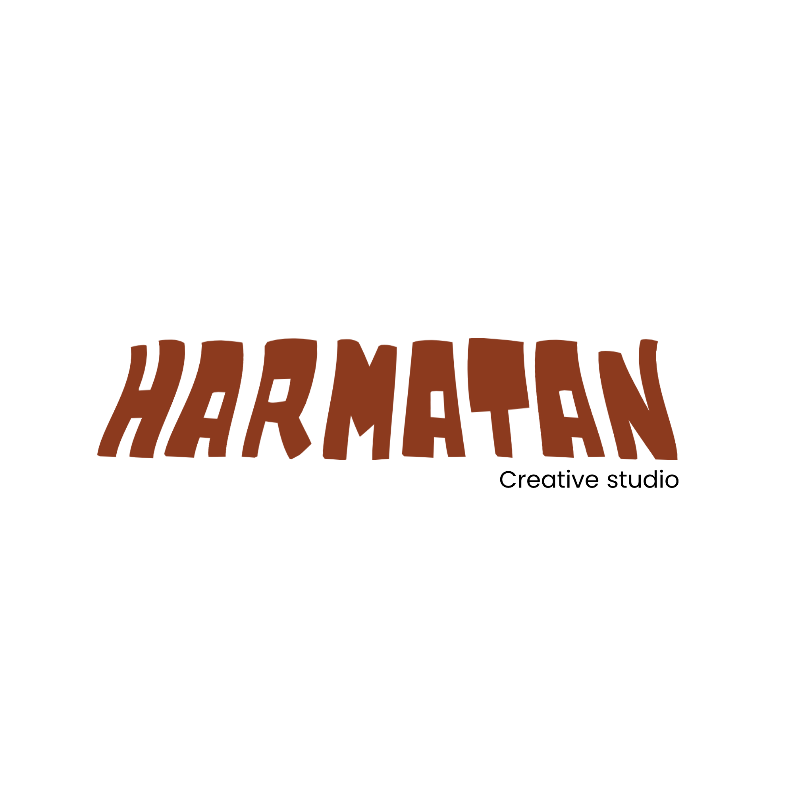

← Portfolio / My own project

An independent creative studio bringing together visual identity, creative direction and content production.
Explore the studio ↓Independent studioAssavedo Jeffrey J.A. / Ghana
01The idea
A studio for
my creative practice.
HARMATAN is my own creative studio project. It gives space to explore identity, creative direction, graphic design and visual work with a distinct cultural perspective.
02Studio practice
03Publishing & speaking
Harmatan
Editorial
A separate editorial voice within the wider HARMATAN project. Its direction and copy are still being developed.
04Officially signed under us
Brands we’ve
worked with.
Creative partnerships from the HARMATAN studio.


05Growing together
Join us?
HARMATAN is still growing. If you want to create, meet different creative minds, or build a wild project with like-minded people, we’d love to hear from you.
Let’s talk ↗06Contact the studio
Have a project
in mind?
For client enquiries and creative collaborations, reach out to HARMATAN.